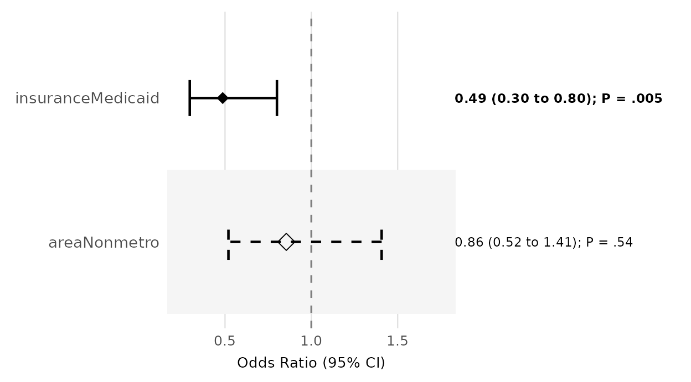
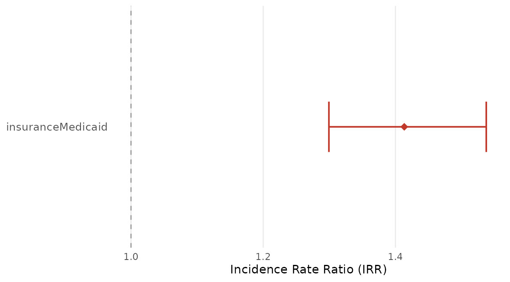
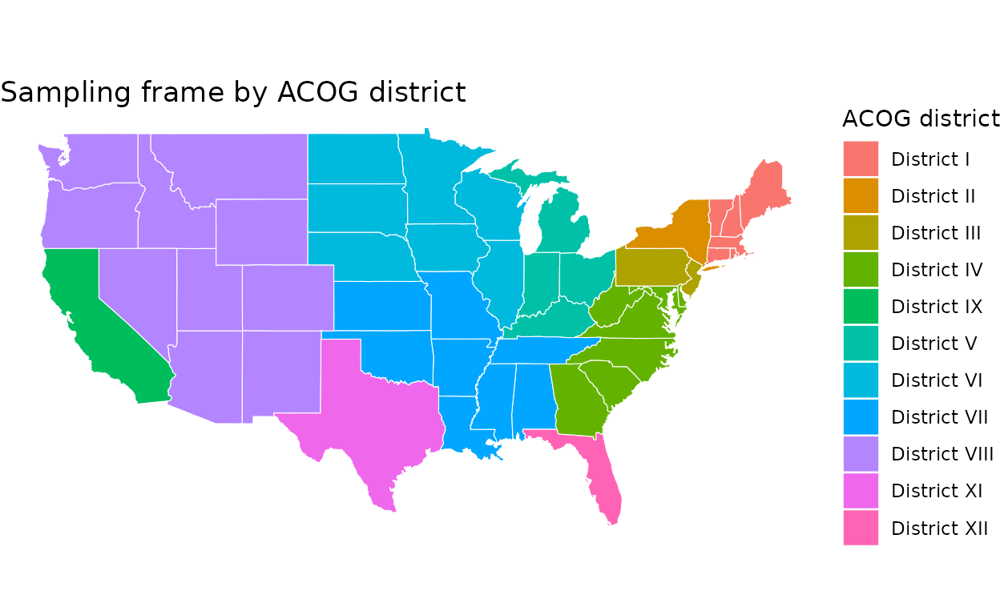
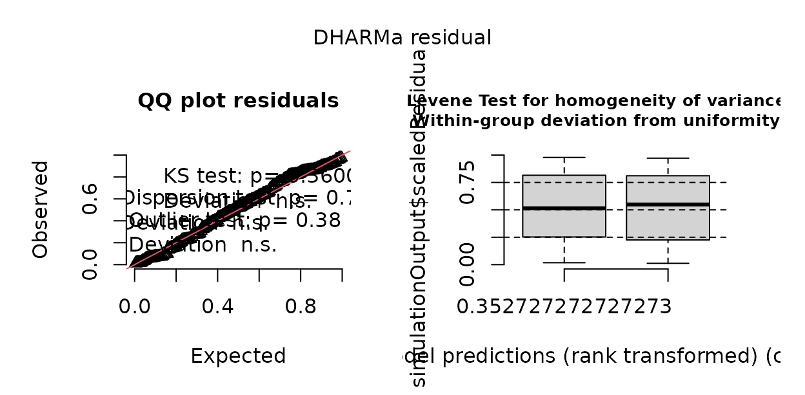

Assembling supplementary digital content
Source:vignettes/supplementary-digital-content.Rmd
supplementary-digital-content.RmdJournals rarely print a mystery-caller study’s full model tables, sensitivity analyses, reporting checklists, participant flow, and maps in the main text — those go in the supplementary digital content (SDC), uploaded as separate files. This vignette assembles that package: model equations, supplementary tables and figures, a missingness analysis, a per-caller evaluation, maps, and two reporting checklists, each generated from the fitted models and the call log so the SDC stays consistent with the manuscript and regenerates itself when the data change.
1. The analysis behind the SDC
A mystery-caller study of insurance-based access has two outcomes — whether an appointment was offered and the wait in business days among offers — and a call log carrying the caller, the call date, and the practice location. We simulate it, then fit a logistic GLMM for the offer and a Poisson GLMM for the wait.
set.seed(2026)
n <- 150
cities <- list(CO = "Denver", TX = "Dallas", NY = "New York",
CA = "Los Angeles", FL = "Miami", IL = "Chicago")
st <- sample(names(cities), n, TRUE)
d <- data.frame(
npi = rep(sprintf("1%09d", seq_len(n)), each = 2),
insurance = rep(c("Commercial", "Medicaid"), n),
caller = rep(sample(paste0("RA", 1:5), n, TRUE), each = 2),
call_date = rep(as.Date("2026-01-05") + sample(0:40, n, TRUE), each = 2),
state = rep(st, each = 2),
city = rep(unlist(cities)[st], each = 2),
area = rep(sample(c("Metro", "Nonmetro"), n, TRUE), each = 2),
degree = rep(sample(c("MD", "DO"), n, TRUE, c(.8, .2)), each = 2)
)
med <- d$insurance == "Medicaid"
d$reached <- rbinom(nrow(d), 1, 0.92) == 1 # some calls never reached a live office
d$appt_offered <- rbinom(nrow(d), 1, plogis(1.1 - 0.9 * med + 0.3 * (d$area == "Metro")))
# a few calls never resolved the wait (incomplete) -> missing outcome
d$wait_days <- ifelse(d$appt_offered == 1 & rbinom(nrow(d), 1, 0.9) == 1,
rpois(nrow(d), ifelse(med, 18, 12)), NA)
offer_crude <- mysterycall_logistic_model(d, "appt_offered", "insurance", "npi")
offer_adjusted <- mysterycall_logistic_model(d, "appt_offered",
c("insurance", "area"), "npi")
wait_model <- mysterycall_poisson_model(
d[d$appt_offered == 1 & !is.na(d$wait_days), ], outcome = "wait_days",
predictors = "insurance", random_intercept = "npi")2. Model equations
Supplementary methods print the statistical model.
mysterycall_model_equation() renders a fitted GLM(M) as
LaTeX — no equatiomatic dependency — reading the link,
terms, and random intercept off the fit.
cat(mysterycall_model_equation(offer_adjusted), "\n\n")
cat(mysterycall_model_equation(wait_model))Pass coefficients = TRUE for the fitted form with
numbers in place of the
s;
the symbolic form carries a legend attribute mapping each
coefficient to its term.
3. Supplementary tables
Table S1 — model estimates (crude vs. adjusted).
tS1 <- mysterycall_multi_model_table(
list(Crude = offer_crude, Adjusted = offer_adjusted))
tS1
#> Multi-model regression table [OR (95% CI)]
#> ------------------------------------------------------------
#> Term Crude
#> insuranceCommercial Ref.
#> insuranceMedicaid 0.49 (0.30 to 0.80) | p=0.005
#> areaMetro
#> areaNonmetro
#> N 300
#> AIC 372.4
#> Adjusted
#> Ref.
#> 0.49 (0.30 to 0.80) | p=0.005
#> Ref.
#> 0.86 (0.52 to 1.41) | p=0.538
#> 300
#> 374.0
#> ------------------------------------------------------------Table S2 — the disparity, with confidence intervals.
tS2 <- mysterycall_disparities_table(d, "appt_offered", "insurance",
ref_group = "Commercial")
tS2
#> Disparity table -- 2 groups | ref: 'Commercial' | wilson 95% CI
#> Group n n_acc Rate 95% CI Abs.Diff RR (95% CI) p-value
#> ----------------------------------------------------------------------------------------------------
#> Commercial 150 114 76.0% 68.6% to 82.1% (ref) 1.00 (ref) (ref)
#> Medicaid 150 91 60.7% 52.7% to 68.1% -15.3 pp 0.80 (0.68 to 0.93) 0.004Table S3 — adjusted effect on the absolute scale.
mysterycall_combined_results_table(wait_model)
#> Term IRR IRR 95% CI p-value Days Diff Days 95% CI
#> 1 insuranceMedicaid 1.52 1.41 to 1.64 < 0.001 <NA> <NA>
#> Significance
#> 1 *Table S4 — this study against prior work.
prior <- data.frame(
author = c("Pollack 2016", "Sharma 2025"), year = c(2016, 2025),
insurance_comparison = "Medicaid vs Commercial", n = c(1200, 480),
or = c(0.42, 0.55), ci_lower = c(0.35, 0.40), ci_upper = c(0.51, 0.75),
specialty = c("Urology", "OBGYN"))
mysterycall_literature_table(prior)
#>
#> -- Mystery-caller literature comparison (2 studies) --
#>
#> Author Year Specialty Comparison N OR (95% CI)
#> Pollack 2016 2016 Urology Medicaid vs Commercial 1200 0.42 (0.35 to 0.51)
#> Sharma 2025 2025 OBGYN Medicaid vs Commercial 480 0.55 (0.40 to 0.75)
#> Direction
#> Disparity detected
#> Disparity detected
#>
#> OR range: 0.42 to 0.55
#>
#> Discussion sentence:
#> Across 2 mystery-caller studies, ORs for Medicaid vs Commercial ranged from 0.42 to 0.55.4. Missing-data analysis
Reviewers want to know whether missingness is benign.
mysterycall_missing_data_analysis() quantifies it and tests
whether it depends on the exposure — the difference between “missing
completely at random” and a threat to validity.
miss <- mysterycall_missing_data_analysis(
d, outcome_col = "wait_days", group_col = "insurance")
miss$summary
#> variable n_observed n_missing pct_missing test statistic df p_value
#> 1 insurance 300 0 40.7 Chi-square 2.707681 1 0.09986607
#> significant
#> 1 FALSE5. Per-caller evaluation
Standardization is central to a covert audit, so the SDC should show
each caller behaved comparably.
mysterycall_call_productivity() summarizes volume and
outcomes by caller; large between-caller swings in the acceptance rate
would flag a standardization problem.
mysterycall_call_productivity(
d, caller_col = "caller", date_col = "call_date", outcome_col = "appt_offered")
#> caller n_calls n_days calls_per_day n_accepted acceptance_rate mean_hold_sec
#> 1 RA2 74 23 3.217391 45 60.8% NA
#> 2 RA4 58 18 3.222222 41 70.7% NA
#> 3 RA5 58 21 2.761905 43 74.1% NA
#> 4 RA1 56 18 3.111111 40 71.4% NA
#> 5 RA3 54 19 2.842105 36 66.7% NA
#> mean_call_sec
#> 1 NA
#> 2 NA
#> 3 NA
#> 4 NA
#> 5 NA6. Supplementary figures, at journal specification
Figure S1 — forest plot of the offer model.
figS1 <- mysterycall_forest_plot(offer_adjusted, x_label = "Odds ratio (95% CI)")
figS1
Figure S2 — cumulative time to an appointment, the correct single-contact time-to-event display:
mysterycall_cumulative_access_curve(
d, time_col = "wait_days", offered_col = "appt_offered",
group_col = "insurance", horizon = 45, plot = TRUE)$plot
mysterycall_save_green_journal_figure() writes any
figure at Obstetrics & Gynecology column width and print
DPI:
basename(mysterycall_save_green_journal_figure(
figS1, file.path(sdc_dir, "figS1_forest"), layout = "single_column"))
#> [1] "figS1_forest.tiff" "figS1_forest.pdf" "figS1_forest.png"
#> [4] "figS1_forest_data.csv"7. Maps
An interactive practice map. Geocode the roster and drop the practices onto a Leaflet map — an interactive supplement that print cannot show.
practices <- unique(d[, c("npi", "city", "state", "insurance")])
g <- mysterycall_geocode_city_state(practices$city, practices$state)
practices$lat <- g$lat; practices$lon <- g$lon
leaflet::addCircleMarkers(
leaflet::addTiles(leaflet::leaflet(practices)),
lng = ~lon, lat = ~lat, radius = 4, stroke = FALSE, fillOpacity = 0.6,
popup = ~paste0(city, ", ", state))A choropleth by region/district. Assign every state
its ACOG district with mysterycall_assign_region() and
shade a US map:
library(ggplot2)
us <- map_data("state")
districts <- data.frame(region = tolower(state.name),
district = mysterycall_assign_region(state.abb))
choro <- merge(us, districts, by = "region")
choro <- choro[order(choro$order), ]
ggplot(choro, aes(long, lat, group = group, fill = district)) +
geom_polygon(colour = "white", linewidth = 0.2) +
coord_quickmap() + theme_void() +
labs(fill = "ACOG district", title = "Sampling frame by ACOG district")
(mysterycall_region_labels() returns the same
state-to-region assignment with centroids for labelling.)
8. Reporting checklists
Observational studies ship a STROBE checklist, built from the fitted model:
head(mysterycall_strobe_checklist(wait_model), 6)
#> STROBE Checklist for Mystery-Caller Study
#> ==================================================
#> [WARN] Item 1 Title/Abstract: Study design stated in title or abstract
#> Cannot auto-detect; verify manually.
#> [WARN] Item 2 Introduction: Scientific background and objectives stated
#> Cannot auto-detect; verify manually.
#> [WARN] Item 3 Methods: Setting, locations, and dates described
#> Cannot auto-detect; verify manually.
#> [WARN] Item 4 Methods: Eligibility criteria for participants stated
#> Cannot auto-detect; verify manually.
#> [WARN] Item 5 Methods: Mystery-caller protocol described (script, blinding, call timing)
#> Cannot auto-detect; verify manually.
#> [WARN] Item 6 Methods: Sample size justified
#> No power/sample_size field found. Verify that a power analysis is reported.
#>
#> Summary: 0 PASS, 6 WARN, 0 FAILBut mystery-caller studies are simulated-patient research,
and STROBE omits the covert-methodology items reviewers ask for — why
the covert method was justified, how callers were trained, how detection
was handled, how the deception was ethically managed.
mysterycall_crisp_checklist() supplies that companion:
crisp <- mysterycall_crisp_checklist()
crisp[crisp$section %in% c("Callers", "Detection", "Ethics"),
c("section", "item")]
#> <CRiSP-style simulated-patient reporting checklist: 6 items, 3 sections>
#> section item
#> Callers Caller recruitment and characteristics
#> Callers Caller training
#> Callers Standardization monitoring
#> Detection Detection and contamination
#> Ethics Ethical approval and deception
#> Ethics Provider burdenThe participant-flow diagram (Figure S-flow) comes from
mysterycall_flowchart(), which renders with the DiagrammeR
package:
mysterycall_flowchart(
counts = c("Sampled" = 240, "Reached" = 226, "Analyzed" = 218))9. Sensitivity analyses
A covert audit invites a predictable set of “but what if…” questions, and the SDC is where you answer them. Two are near-universal.
Non-response bounds. Not every call reaches a live
office, so the offer rate is not point-identified. Rather than quietly
condition on completed calls, mysterycall_outcome_bounds()
reports the assumption-free interval — assign every unreached call first
to failure, then to success:
mysterycall_outcome_bounds(d, "appt_offered", observed = "reached")
#> <mysterycall outcome bounds under non-response>
#> universe 300 = observed 280 + missing 20; positives 191
#> complete-case rate: 68.2% (95% CI 62.5%-73.4%)
#> bounds over universe: [63.7% (all missing fail), 70.3% (all succeed)] width 6.7%Leave-one-caller-out. Confirm the exposure effect does not hinge on a single research assistant by refitting with each caller dropped in turn:
fit_glm <- glm(appt_offered ~ insurance + area, binomial, d)
mysterycall_leave_one_out(fit_glm, d, group = "caller", term = "insuranceMedicaid")
#> <mysterycall leave-one-group-out: term 'insuranceMedicaid', 5 refits>
#> full-data ratio: 0.49 (p = 0.00459)
#> # A tibble: 5 × 7
#> group_excluded n estimate ratio std_error p_value converged
#> <chr> <int> <dbl> <dbl> <dbl> <dbl> <lgl>
#> 1 RA1 244 -0.570 0.566 0.278 0.0405 TRUE
#> 2 RA2 226 -0.786 0.455 0.301 0.00910 TRUE
#> 3 RA3 246 -0.730 0.482 0.282 0.00956 TRUE
#> 4 RA4 242 -0.614 0.541 0.280 0.0284 TRUE
#> 5 RA5 242 -0.918 0.399 0.283 0.00119 TRUEOther analyses worth including, each a single call: the wait model
under an alternative count family
(mysterycall_compare_count_families()), calendar vs.
business days (mysterycall_calendar_sensitivity()), a
stricter outcome definition (re-fit on “offer with the sampled
physician”), and Benjamini–Hochberg-adjusted p-values
(mysterycall_multiple_comparison_adjust()).
10. Baseline characteristics (Table 1)
Reviewers want to know who was sampled.
mysterycall_table1() builds a publication-ready baseline
table at the practice level:
practices <- unique(d[, c("npi", "state", "area", "degree")])
mysterycall_table1(practices, covariates = c("state", "degree"),
stratify_by = "area", include_overall = TRUE)
#> Table 1 (Overall N=150, Metro N=67, Nonmetro N=83)
#> Stratified by: area
#>
#> # A tibble: 8 × 6
#> variable level Overall `Metro (N=67)` `Nonmetro (N=83)` p_value
#> <chr> <chr> <chr> <chr> <chr> <chr>
#> 1 state CA 29 (19.3%) 16 (23.9%) 13 (15.7%) 0.046
#> 2 state CO 27 (18.0%) 12 (17.9%) 15 (18.1%) NA
#> 3 state FL 36 (24.0%) 11 (16.4%) 25 (30.1%) NA
#> 4 state IL 15 (10.0%) 4 (6.0%) 11 (13.3%) NA
#> 5 state NY 20 (13.3%) 14 (20.9%) 6 (7.2%) NA
#> 6 state TX 23 (15.3%) 10 (14.9%) 13 (15.7%) NA
#> 7 degree DO 42 (28.0%) 16 (23.9%) 26 (31.3%) 0.313
#> 8 degree MD 108 (72.0%) 51 (76.1%) 57 (68.7%) NA11. Full model output: ICC and variance components
The SDC should report more than the exposure coefficient — the
clustering matters. mysterycall_icc() gives the intraclass
correlation (how much of the variation sits between practices), and
mysterycall_random_effect_variance() the variance
components:
mysterycall_icc(wait_model)
#> Intraclass Correlation Coefficient (latent_variable_poisson)
#> ICC = 0.0000
#> sigma2_u = 0.0000 (physician random-intercept variance)
#>
#> ICC = 0.000: 0.0% of outcome variance is attributable to between-physician clustering.
mysterycall_random_effect_variance(wait_model$model)
#> $icc
#> [1] 0
#>
#> $random_variance
#> [1] 0
#>
#> $residual_variance
#> [1] 3.289868
#>
#> $random_effect_group
#> [1] "npi"
#>
#> $var_table
#> grp var1 var2 vcov sdcor Significant
#> 1 npi (Intercept) <NA> 0 0 No
#>
#> $interpretation
#> [1] "low"
#>
#> $sentence
#> [1] "The intraclass correlation (ICC) of the model for the random effect group 'npi' is 0. An ICC of 0 is considered low, suggesting that most variance is at the individual level rather than between groups of 'npi'."12. A priori power
Journals require the pre-specified power calculation.
mysterycall_poisson_power() sizes the wait-time comparison
for a target incidence-rate ratio:
mysterycall_poisson_power(irr = 1.40, lambda_ref = 14, power = 0.80,
both_arms = TRUE)
#> $n_per_arm
#> [1] 9
#>
#> $n_total
#> [1] 9
#>
#> $n_total_calls
#> [1] 18
#>
#> $irr
#> [1] 1.4
#>
#> $lambda_ref
#> [1] 14
#>
#> $lambda_trt
#> [1] 19.6
#>
#> $alpha
#> [1] 0.05
#>
#> $power
#> [1] 0.8
#>
#> $design_effect
#> [1] 113. Model diagnostics
A residual figure justifies the model.
mysterycall_plot_residuals() draws the diagnostic panel,
and the fitted object already carries the overdispersion check:
mysterycall_plot_residuals(wait_model)
14. Reproducibility
Finally, a reproducibility appendix — the R and package versions the analysis ran under, so the SDC is a complete, re-runnable record:
mysterycall_session_snapshot(
file = file.path(sdc_dir, "session_snapshot.txt"), quiet = TRUE,
notes = "Supplementary digital content build")15. Export and manifest
Write each artifact in the format the journal wants — a CSV per table
is the most portable, mysterycall_export_results_docx()
gives formatted Word (needs officer/flextable), and
mysterycall_supplemental_tables() bundles every model table
into one workbook (needs openxlsx):
write.csv(as.data.frame(tS1), file.path(sdc_dir, "TableS1_models.csv"),
row.names = FALSE)
write.csv(tS2, file.path(sdc_dir, "TableS2_disparities.csv"), row.names = FALSE)
write.csv(as.data.frame(crisp), file.path(sdc_dir, "ChecklistS1_CRiSP.csv"),
row.names = FALSE)
mysterycall_supplemental_tables(
logistic_fit = offer_adjusted, poisson_fit = wait_model,
file = file.path(sdc_dir, "supplemental_tables.xlsx"), overwrite = TRUE)Finally, a manifest — reviewers appreciate it, and it doubles as a build check:
files <- list.files(sdc_dir)
data.frame(
file = files,
kind = ifelse(grepl("\\.csv$", files), "table",
ifelse(grepl("\\.(png|pdf|tiff)$", files), "figure",
ifelse(grepl("\\.xlsx$", files), "bundle", "other"))))
#> file kind
#> 1 ChecklistS1_CRiSP.csv table
#> 2 figS1_forest_data.csv table
#> 3 figS1_forest.pdf figure
#> 4 figS1_forest.png figure
#> 5 figS1_forest.tiff figure
#> 6 session_snapshot.txt other
#> 7 supplemental_tables.xlsx bundle
#> 8 TableS1_models.csv table
#> 9 TableS2_disparities.csv tableRecap
Every piece of a mystery-caller study’s supplementary digital content — the model equations, a baseline Table 1, the crude-vs-adjusted and disparity tables, the ICC and variance components, the missingness analysis, the per-caller evaluation, the a-priori power calculation, the forest, cumulative-access, and residual figures at journal specification, the practice and district maps, the STROBE and CRiSP reporting checklists, non-response and leave-one-caller-out sensitivity analyses, and a reproducibility appendix — comes from the same fitted models and call log with one call apiece, so the SDC regenerates itself whenever the analysis is re-run.